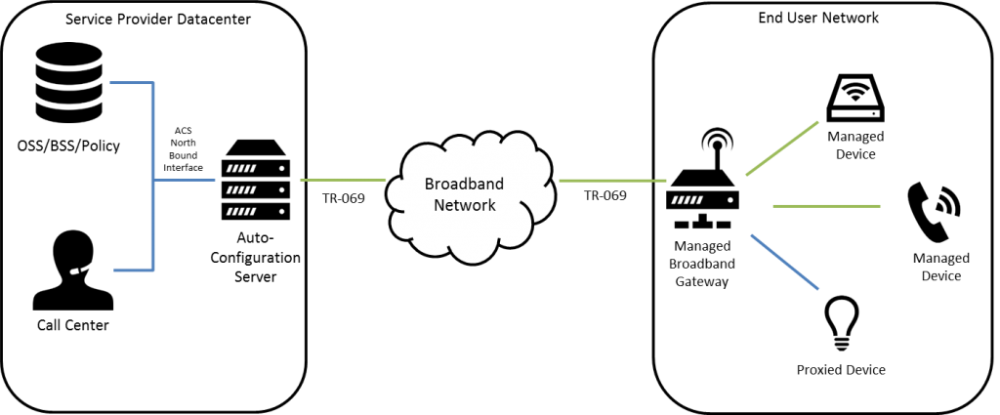
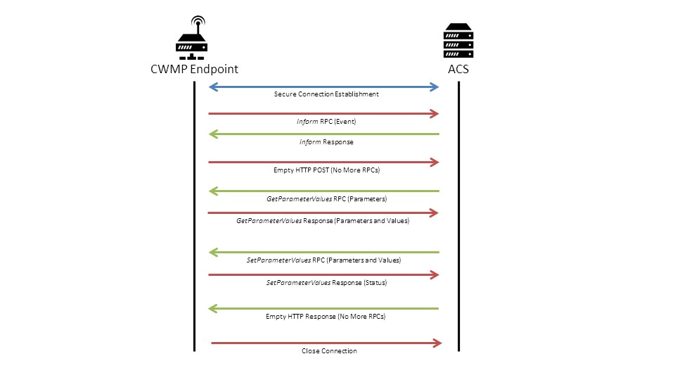

tr-069
TR-069协议简介
TR069协议是宽带论坛 (broadband-forum) 制定的一个面向终端设备的网管协议，称为“用户终端设备广域网管理协议（CWMP，CPE Wan Management Protocol）”，文档编号为TR069，所以又称为TR069协议。
CWMP协议广泛地被各国ISP（互联网服务供应商）采用， 用来对企业和个人用户的互联网设备如无线路由器， VoIP电话，机顶盒等进行远程管理。

名词解释
- ACS：Auto-Configuration Server （自动配置服务器）
- CPE：Customer Premise Equipment（用户终端设备）
- CWMP：CPE WAN Management Protocol（用户终端设备广域网管理协议）
- RPC： Remote Procedure Call（远程过程调用）
- SOAP： Simple Object Access Protocol（简单对象访问协议）
- tr064： LAN side DSL CPE configuration（LAN侧DSL被管理设备设置协议）
CVE-2016-10372
此漏洞被mirai使用造成了德国的断网事件，漏洞成因是德国运营商使用的Eir’s D1000 Modem，将本该暴露在LAN侧的tr-064协议服务暴露在了WAN侧，并没做身份认证，导致命令执行，从而被。
tr-064与tr-069一同运行在7547端口，前者设计为在LAN上运行，而后者设计为在WAN侧运行。tr-064一个老版的不成熟的协议，目前只被使用在老设备上，新设备被 TR-064 Issue 2 替代。
所以说，此次的断网事件与tr-069并没关系，但许多报道将之归咎于此协议，算是背锅了。但tr-069使用广泛，之前也曾被爆出过漏洞，故十分有研究价值。
会话过程

- CWMP的通信通常由CPE端发起，ACS的地址被写在CPE的配置中，CPE会定时向该地址发送
Inform RPC，报告自身状态和统计信息 - ACS收到后，如果开启了https，ACS应该使用HTTP基础认证，如果未使用https，则应使用HTTP摘要认证，认证成功后ACS会发送一个
InformResponse，CPE收到后意味Inform RPC完成 - 如果CPE需要继续RPC，方法如上，如果不需要，则发送一个空的HTTP POST给ACS结束RPC
- 之后轮到ACS进行RPC，例如使用
GetParameterValues RPC获取CPE上一些参数的值 - CPE通过HTTP POST将结果返回给ACS
- ACS同CPE发送一个空的HTTP POST给CPE结束PRC
- 会话结束
Connection Request
从上可知，通常会话是由CPE发起的，但有时，ACS需要主动联系CPE，为了实现这个目的，CWMP提供了Connection Request这个机制，允许ACS激活CPE发起一个会话。
- 由ACS发出CPE随机生成的一个 URL 发送一个简单的HTTP GET请求
- ACS需要通过CPE的HTTP 摘要认证
- 通过认证后，CPE会返回
200 OK or 204 "No Content"，表示连接建立成功
SOAP
CWMP使用SOAP（简单对象访问协议）进行RPC。
|
|
必需的 Envelope 元素，可把此 XML 文档标识为一条 SOAP 消息，命名空间 xmlns:soap="http://schemas.xmlsoap.org/soap/envelope/"，这是SOAP的固定格式
在CWMP中，也存在不同的版本，所以引入命名空间xmlns:cwmp="urn:dslforum-org:cwmp-1-1，表示使用那一版的CWMP
可选的 Header 元素，包含头部信息，在CWMP中用来存放，ID (标记一对requests和response)，会话超时时间，版本信息等
必需的 Body 元素，包含所有的调用和响应信息，包含具体RPC方法和参数，如上的SOAP功能即使Reboot
可选的 Fault 元素，提供有关在处理此消息所发生错误的信息
CPE的RPC
GetRPCMethods
获取支持的RPC方法
SetParameterValues
设置CPE的参数
key: ParameterList value: ParameterValueStruct (name, value)
key: ParameterKey value: string
GetParameterValues
获取CPE的参数
key: ParameterNames value: string
GetParameterNames
获取CPE的参数名
key: ParameterPath value: string
key: NextLevel value: boolean 若为假，需要返回路径下所有参数，为真，则只返回该路劲下一层参数
SetParameterAttributes
设置CPE的参数属性
key: ParameterList value: SetParameterAttributesStruct SetParameterAttributesStruct:
Name,
NotificationChange boolean 是否修改预警内容，
Notification int[0:6] 当参数被修改时是否通知ACS, 0为不通知, 1-6代表不同的相应级别
AccessListChange boolean 是否修改访问列表
AccessList string 定义写权限(write access) 0表示只有ACS可写, “Subscriber”表示Indicates write access by an interface controlled on the subscriber LAN. Includes any and all such LAN-side mechanisms, which MAY include but are not limited to TR-064 (LAN-side DSL CPE
Configuration Protocol), UPnP, the device’s user interface, clientside telnet, and client-side SNMP.GetParameterAttributes
获取CPE的参数属性
key: ParameterNames string
key: ParameterList value:SetParameterAttributesStruct
AddObject
创造一个多实例对象的新实例( create a new instance of a Multi-Instance
Object)key: ObjectName value: string
key: ParameterKey value: string
DeleteObject
删除一个对象的实例key: ObjectName value: string
key: ParameterKey value: string
Download
让CPE去指定URL下载文件
key: FileType value: stringkey: URL value: string
key: Username value: string 用于文件服务器认证
key: Password value: string
key: FileSize value: unsignedInt
key: TargetFileName value: string
key: DelaySeconds value:unsignedInt 用于延迟下载Reboot
重启
key: CommandKey value: string
Data Models
Data Models（数据模型）由一个个不同的objects （对象）和object对应的sub-objects（子对象）和 parameters（参数）组成。
Data Models使用由类似树型的点分层关系组织起来。树干为需要配置的对象，树叶为具体的配置参数，所有配置参数都一些属性，例如是否可读写
|
|
这条规定了CPE的URL，InternetGatewayDevice为根节点，ManagementServer为object，ConnectionRequestURL为parameter
CWMP最初设计时，被使用在家用路由器和网关设备，所以根结点为InternetGatewayDevice。现在CWMP扩展可管理其他设备，便设计了新的根节点为Device，如今使用的主要是Device:2。
参考
https://www.qacafe.com/tr-069-training/session-overview/
https://www.broadband-forum.org/technical/download/TR-069.pdf